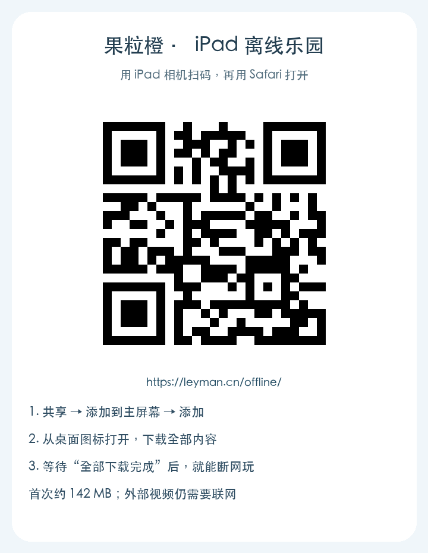

iPad · 安卓平板 · 电脑
把小乐园带在身边
先下载一次，以后断网也能学、也能玩。
从这里，把乐园装进 iPad
打开正式下载入口 ↗
iPad 请先添加到主屏幕
- 用 Safari 打开本页，点“共享”。
- 选“添加到主屏幕”；如果有“作为网页 App 打开”，请打开它，然后点“添加”。
- 从桌面的“果粒橙离线乐园”图标打开，再点下面的下载按钮。
请从桌面图标里下载。Safari 页面与桌面 App 的离线内容可能分别保存。
下载完整离线内容
包含全部故事插图和配音、认知卡片、语文数学课堂、学写字、画画、音乐和小游戏。
正在检查内容大小…
请保持联网，准备好了再开始。
▶ 进入离线乐园下载时请注意
- 建议连 Wi-Fi。下载期间请让本页保持在前台；中断后再打开，点“继续下载”即可。
- 出现“全部下载完成，可以离线玩了”后，可关闭 Wi-Fi、开启飞行模式，再进入乐园试一试。
- 小影院的央视视频属于外部网站，仍需要联网，没有包含在离线包里。
- 本机进度和作品不会上传云端。清除网站数据、删除 App 或设备空间不足，可能导致离线内容或记录丢失；建议导出重要画作和音乐。
- 以后联网回到本页点“下载新版”，完整下载后才会切换版本，已有离线版可以继续玩。
这是可离线使用的网页 App，不是 App Store 安装包。压缩包用来备份和在电脑上运行，不能直接作为 iPad App 安装。